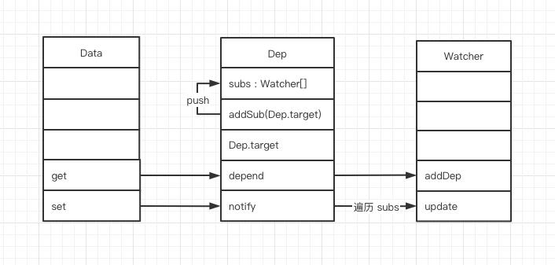
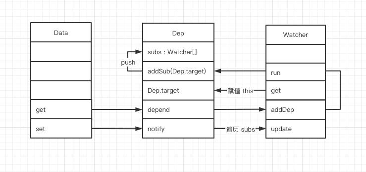
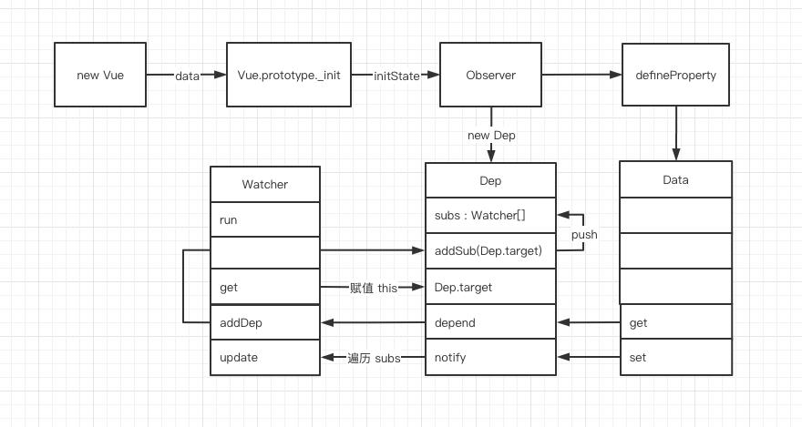

个人对vue响应式原理的理解
个人对vue响应式原理的理解
响应式就是首先建立响应式数据和依赖之间的关系，当这些响应式数据发生变化的时候，可以通知那些绑定这些数据的依赖进行相关操作，可以是DOM更新或者执行一个回调函数。（所谓数据响应式就是能够使数据变化可以被检测并对这种变化做出响应的机制）
- vue2的对象数据是通过Object.defineProperty()的方式定义数据拦截，当数据被访问或放生变化时，我们感知并做出响应。
- 如果是数组则通过覆盖该数组原型的方法，扩展它的7个变更方法，使这些方法可以额外的做更新通知，从而做出响应。
- 从new Vue开始，首先通过get、set监听Data中的数据变化，同时创建Dep用来搜集使用该Data的Watcher。
- 编译模板，创建Watcher,并将Dep.target标识为当前Watcher
编译模板时，如果使用到了Data中的数据，就会触发Data中的get方法，然后调用Dep.addSub()将Watcher搜集起来。 - 数据更新时，会触发Data的set方法，然后调用Dep.notify通知所有使用到该Data的Watcher去更新Dom.
Observer
Dep
// 执行 new Vue 时会依次执行以下方法
Vue.prototype._init(option)
initState(vm)
observe(vm._data)
new Observer(data)
walk(obj) –调用 walk 方法，遍历data中的每一个属性，监听数据的变化 –observer/index.js
function walk(obj) {
const keys = Object.keys(obj);
for (let i = 0; i < keys.length; i++) {
defineReactive(obj, keys[i]);
}
}defineReactive (obj, key, val) –执行defineProperty监听数据读取和设置–observer/index.js
function defineReactive(obj, key, val) {
// 为每个属性创建 Dep（依赖搜集的容器，后文会讲）
const dep = new Dep();
// 绑定 get、set
Object.defineProperty(obj, key, {
get() {
const value = val;
// 如果有 target 标识，则进行依赖搜集
if (Dep.target) {
dep.depend();
}
return value;
},
set(newVal) {
val = newVal;
// 修改数据时，通知页面重新渲染
dep.notify();
},
});
}
Dep.js
class Dep { |

Watcher.js
class Watcher { |
源码中我们看到，Watcher 实现了渲染方法 _render 和 Dep 的关联， 初始化 Watcher 的时候，打上 Dep.target 标识，然后调用 get 方法进行页面渲染。加上上文的 Data，目前 Data、Dep、Watcher 三者的关系如下：

Vue 通过 defineProperty 完成了 Data 中所有数据的代理，当数据触发 get 查询时，会将当前的 Watcher 对象加入到依赖收集池 Dep 中，当数据 Data 变化时，会触发 set 通知所有使用到这个 Data 的 Watcher 对象去 update 视图。
整体流程如下：

本博客所有文章除特别声明外，均采用 CC BY-NC-SA 4.0 许可协议。转载请注明来自 title！